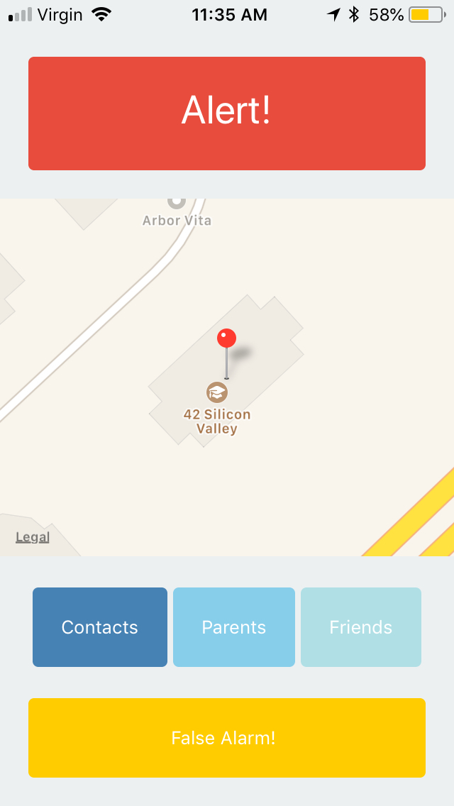
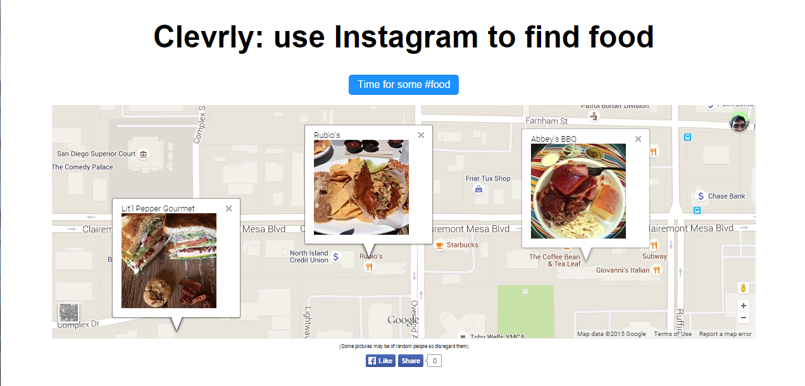

I'm Zain Munad.

I like to code things that make people smile :)
-
Torrent Chan
Github
Technologies used: Webtorrent.js, Javascript, Python, Flask
I created TorrentChan to solve a common problem with hosting imageboards and content based websites in general. Once there are enough users on such a website, data transfer can start costing a prohibative amount due to the transfer of images and videos. Each post and it's content on TorrentChan is turned into a torrent on the frontend and a magnet link of the torrent is sent to the server to be stored. This means all the data the server is transferring are the magnet links, eliminating the data transfer problem. This system is made possible using the Webtorrent library for the frontend. It allows clients to seed the post torrents to each other, decentralizing the hosting of the content.
-
Alert Button
Github
Technologies used: React Native, Javascript, Serverless
Built at AngelHack Silicon Valley 2018 in response to tragic active shooter events, this app allows students to report the location of an active shooter to alert either all their contacts, their parents or their friends. I initially chose the React Native platform because I had heard how easy it made building cross platform apps, but quickly discovered just how rapid it made mobile development. I was able to do the design, backend serverless code and React Native all in the space of a few hours, even though it was my first time using React Native!
 -
Clevrly Food Finder
Github
Technologies used: APIs, Javascript, jQuery
Back in 2015 while using Instagram, I found myself thinking, "Why don't we put all these pictures of food people are posting to good use?". And so I did. I used a Foursquare's API to get a list of nearby resturants, which I plugged into Instagram's API to get a list of photos at that location tagged with #food. I displayed all that on a Google map and Clevrly was born. It let you see what the food really looked like at resturants without having to go there.
